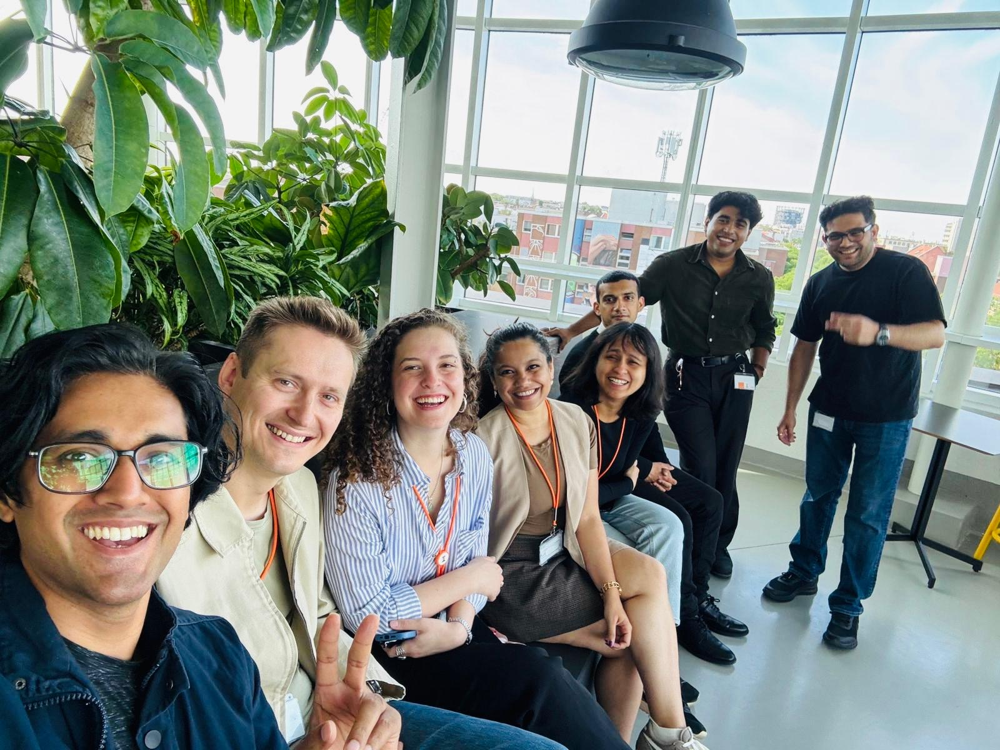
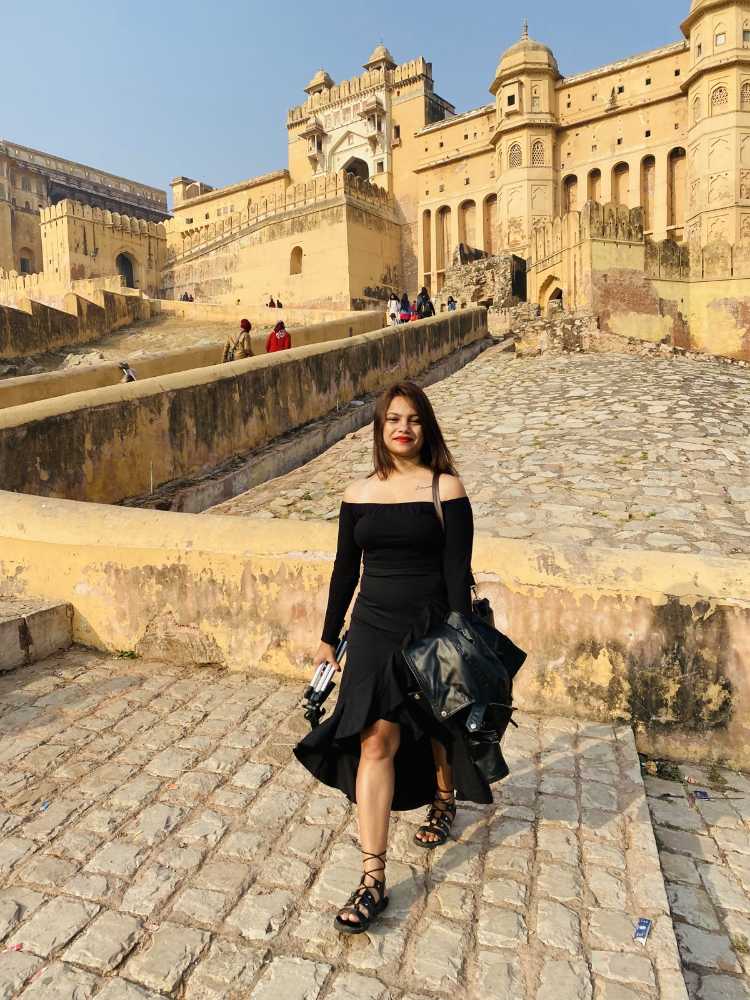
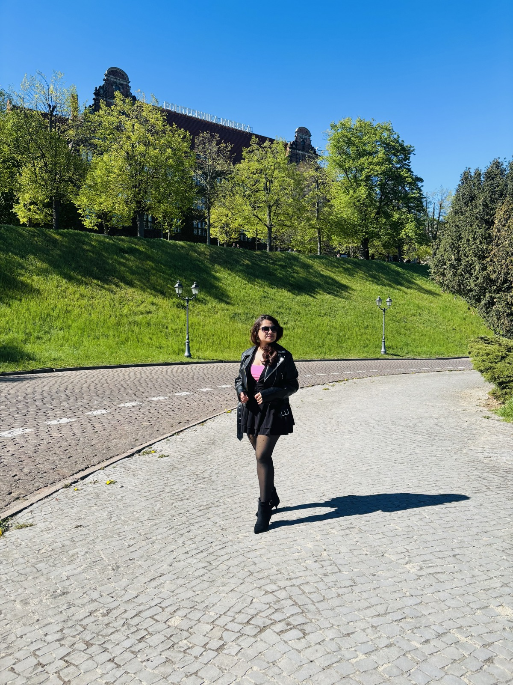
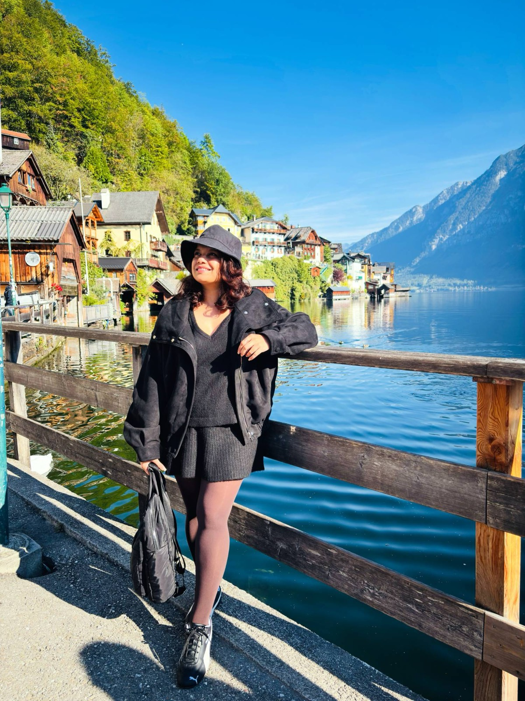
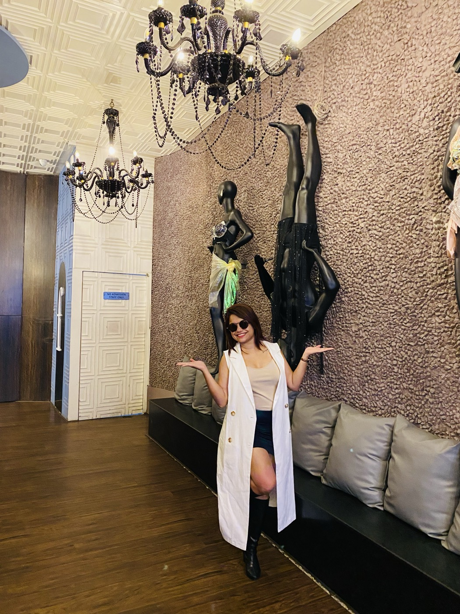
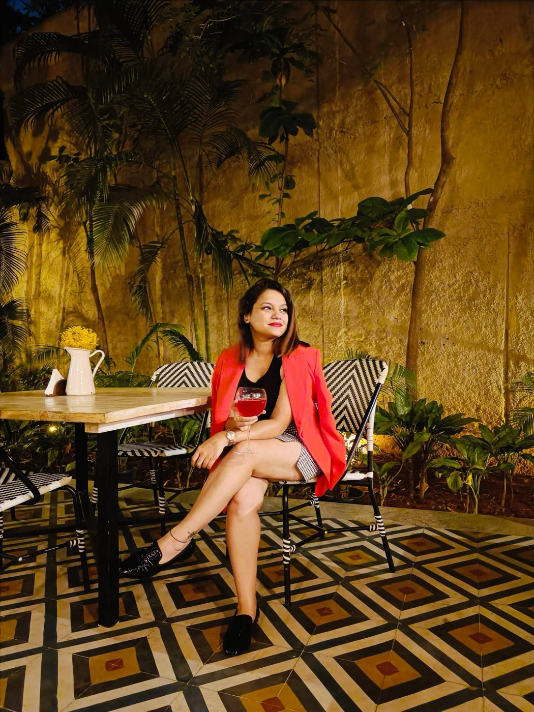

Inventory & material optimisation
- Result
- Inventory down 23.5%, non-movers nearly halved, 100+ inactive materials deactivated, NOSSCE recertification achieved, supply continuity kept.
Supply chain strategist, traveller, fashion lover and curious soul who believes life should always hold a little magic. Choose a light on the map to open a chapter.
With nearly 7+ years of experience across IBM, Bosch, and Novartis, my journey has taken me from electronics engineering to supply chain. Now, I’m pursuing my Master’s in Berlin and continuing my supply chain journey as a Working Student at KWS Group.
Beyond work, I’m a traveller at heart, a fashion enthusiast, an avid reader, and someone who finds magic in the little things. As I write this new chapter, I’m excited to see where curiosity, ambition, and imagination take me next. ✨
Technische Hochschule Wildau: Innovation Strategies for Sustainable Development
Symbiosis International University
Visvesvaraya Technological University
I believe in staying curious, embracing new perspectives, and finding meaning in the little things. I value creativity as much as strategy, and believe that a little imagination and magic can make even the most ordinary journey extraordinary. ✨
Working Student at KWS Group, supporting global supply chain and SAP S/4HANA transformation. Based in Berlin, with a German work permit and open to opportunities across the EU.

Open a role to read what I delivered.
Looking for someone to steer your next launch, rollout or S/4HANA migration?
Field notes from the places I've called home and the countries I've wandered through. The map only opens for those who know the words. Once it does, turn each card to see the photograph.
Ankita Deshpande, wanderer & seeker of small magic, is proud to present
From cosy cafés and bookshop corners to Tiergarten’s fairytale paths, Berlin is where a new adventure began. ✨
A home of vibrant colours, rich stories, and unforgettable warmth — a little piece of magic I carry everywhere. 🇮🇳

Charming old towns, cobblestone streets, and medieval castles make Poland feel like stepping into a storybook. 🏰✨

From Salzburg to Innsbruck and enchanting Hallstatt, Austria felt like stepping straight into a storybook. 🏔️

Gothic spires, fairytale bridges, and enchanting lanes make Prague feel like a city where a little magic lives around every corner. 🪄
Edinburgh's winding lanes, ancient castles steeped in secrets, and the mist-covered Scottish Highlands are calling. I dream of a journey that feels like stepping into a wizarding world — windswept adventures, timeless fashion, and a little magic around every corner.
From sharp tailoring for the boardroom to black lace after midnight. A lookbook of the outfits, colours and textures that feel most like me.


Feminine · whimsical · effortless
Coat · rings · boots
A lifelong Harry Potter fan with a soft spot for moon phases, candlelit reading, old books and anything that feels a little enchanted.
Curious, independent, and always exploring new ideas, with a little Slytherin ambition.
Full of mystery, hidden truths, and a touch of darkness.
Intelligent, resourceful, ambitious, and someone who makes things happen rather than waiting for magic.
A wand for someone intuitive, determined, and drawn to a little mystery.
“Accio opportunities!”
A cosy reading session with a psychological thriller, a warm cup of coffee, soft music, and a little daydreaming. I love ending the day in my own little world, where books, imagination, and a touch of magic make even the simplest evenings feel special. 🕯️📚
Hover over a bottle, or tap it, to read its label.
One sip and every question becomes an adventure. Brewed for Ravenclaws who can't stop asking “what if?”
Distilled from old maps and train timetables. Side effects include spontaneous trips to Prague.
A little Slytherin in a Ravenclaw bottle. Take before big meetings, bold moves and S/4HANA go-lives.
Warm coffee, soft music, candlelight and the last chapter of a thriller, bottled for quiet nights.
Whether you're hiring a supply chain strategist, swapping travel tips or recommending a book, I'd love to hear from you.
Product lifecycle & supply chain roles across the EU. German work permit, based in Berlin.
Chapter II → The travellerAlways collecting cities, stories and the perfect café.
Chapter III → The fashion loverTailoring by day, black lace by moonlight.
Chapter IV → The curious soulWho believes life should always hold a little magic.
Chapter V →